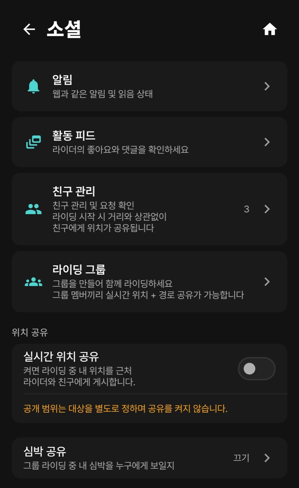
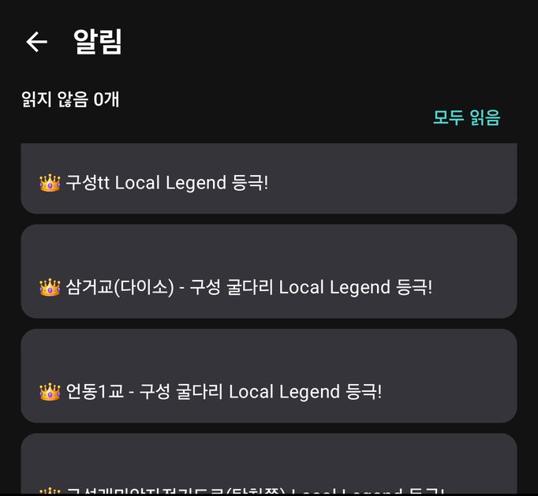

설정 > 소셜에 함께 타기 기능이 모여 있습니다.

| 메뉴 | 하는 일 |
|---|---|
| 알림 | 웹과 같은 알림과 읽음 상태 (홈 오른쪽 위 종 아이콘과 같은 목록) |
| 활동 피드 | 라이더의 좋아요와 댓글 |
| 친구 관리 | 내 친구 코드, 친구 목록, 받은 요청. |
| 라이딩 그룹 | 그룹 만들기 / 참여. 그룹 멤버끼리 실시간 위치와 경로를 공유합니다. |
| 실시간 위치 공유 | 켜면 라이딩 중 내 위치를 근처 라이더와 친구에게 보냅니다. 처음에는 꺼져 있습니다(아래 표). |
| 심박 공유 | 그룹 라이딩 중 내 심박을 보낼 대상: 끄기(기본) · 그룹 멤버 · 근처 라이더까지 |

iOS iPhone의 소셜 메뉴 이름은 친구 · 그룹입니다(Android: 친구 관리 · 라이딩 그룹).
https://orider.co.kr/friend/코드)를 메신저로 보내면 받은 사람이 앱에서 바로 친구 추가 화면을 엽니다./group/join/코드)를 눌러도 됩니다.그룹에 참여한 상태로 기록하면 데이터 화면에 그룹 필드(가장 가까운 멤버 · 가장 먼 멤버 · 그룹 산개 · 그룹 평균 심박)를 넣어 볼 수 있습니다. 경로를 그룹 멤버에게 보내려면 “공유할 경로 선택”에서 경로와 멤버를 고릅니다.
친구 관리 화면에는 “라이딩 시작 시 거리와 상관없이 친구에게 위치가 공유됩니다”라고 적혀 있습니다. 이 문장은 아래 실시간 위치 공유를 켰을 때의 동작입니다. 스위치가 꺼져 있으면 기록을 시작해도 위치를 보내지 않습니다.
| 조건 | 내 위치가 보이나 |
|---|---|
| 실시간 위치 공유 꺼짐 (처음 값) | 보내지 않습니다. 기록 중에도 보이지 않습니다. |
| 실시간 위치 공유 켜짐 + 기록 중 | 라이딩·러닝을 기록하는 동안에만 보냅니다. 받는 사람은 설정 > 계정 > 위치 공유(iOS 설정 > 소셜)의 대상에 따라 정해집니다: 전체공개는 친구와 1km 이내 라이더, 친구만은 친구, 비공개는 아무도 아닙니다. |
| 기록을 끝낸 뒤 | 새 위치를 더 보내지 않습니다. |
끄는 방법: 설정 > 소셜 > 실시간 위치 공유 스위치를 끕니다. 화면 안내대로 공개 범위(대상)를 바꾸는 것만으로는 공유가 켜지거나 꺼지지 않습니다. 그룹 이벤트 주행의 참가자 위치 표시는 이벤트 화면 안내를 따르세요.
| 설정 | 위치 | 정하는 것 |
|---|---|---|
| 실시간 위치 공유 | 설정 > 소셜 | 기록 중 위치를 보낼지 말지 (켜기 / 끄기) |
| 위치 공유 (대상) | 설정 > 계정 (iOS 설정 > 소셜) | 위치를 누구에게 보일지. 대상만 정하며 공유를 켜지는 않습니다. |
| 활동 기본 공개범위 | 설정 > 계정 (iOS 설정 > 소셜) | 새 기록을 올릴 때의 기본 공개 범위 (활동별로 바꿀 수 있음) |
공개 범위는 화면마다 이름이 조금씩 다르지만 모두 같은 3단계입니다.
| 단계 | 화면에 보이는 이름 | 누가 보나 |
|---|---|---|
| 전체 공개 | 모두에게 공개 · 전체 공개 · 전체 · 전체공개 | 모든 사용자 (세그먼트 순위표에도 들어갈 수 있음) |
| 친구 | 친구에게만 · 친구 · 팔로워만 · 친구만 | 친구로 맺은 사람만 ('팔로워만'도 친구 공개와 같습니다) |
| 비공개 | 비공개 | 나만 |
(이름이 쓰인 곳: 웹 설정 > 계정 “모두에게 공개/친구에게만/비공개”, 웹 활동 편집 “전체 공개/팔로워만/비공개”, 웹 활동 ⋯ 메뉴 “전체 공개/친구/비공개”, 웹 업로드 창 “전체/친구/비공개”, 앱 “전체공개/친구만/비공개”)
활동 하나의 공개 범위는 주행 기록 카드나 활동 상세의 🌐 전체공개 ▾ 칸을 눌러 바꿉니다(5장). 심박·파워 같은 지표만 따로 숨기는 설정은 없습니다.
장시간 그룹 라이딩에서 배터리·데이터를 아끼는 모드입니다. 지도와 최소한의 소통 버튼(SOS · 핑 · 프리셋 메시지)만 보여 주고, 위치를 10초 간격으로 기록합니다.
| 버튼 | 쓰는 법 |
|---|---|
| SOS | 2초간 길게 눌러야 보내집니다. 그룹 전원에게 “도움이 필요합니다”가 뜹니다. 실수로 보냈다면 SOS 취소. |
| 핑 | 내 위치를 그룹에 알립니다. |
| 프리셋 메시지 | 정지 · 여기서 대기 · 기계 고장 · 속도 줄이기 · 펑크 · 카페 · 먼저감 |
내가 속한 그룹에 진행 중인 이벤트(번개·대회 등)가 있으면, 라이딩 준비 화면에서 시작할 때 이벤트 주행으로 기록되고 기록 중 화면에 순위가 나옵니다. 리더·운영진에게는 참가자 현황, 체크인(QR 또는 배번, 카메라 권한 필요), 이벤트 종료 메뉴가 더 보입니다. 중간에 그만두면 이벤트 요약에 미완주로 집계됩니다.